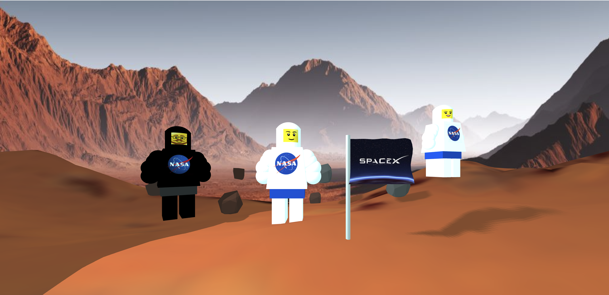
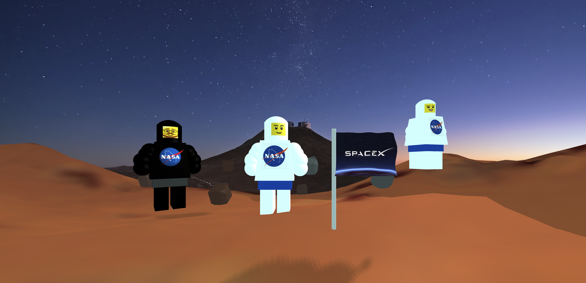
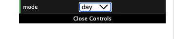

Inspired by the documentary Return to Space, I created a Mars scene to showcase the possibility of humans living a multiplanetary life in the future. Here is the demo.
Graphics concepts used in the scene:
The day scene on Mars:

The night scene on Mars:

I added a GUI control to the top right corner of the page so that the user could switch between the day mode and the night mode.
I texture mapped these two pictures to the background of the scenes.
In order to create a terrain-like surface, I used a height map (the picture on the left) to create elevation variations. A height map is essentially a black and white image, and in any height map, the dark areas are the low areas and the white areas are the high areas. The height map below is loaded into the displacement map of the MeshPhongMaterial for the terrain. I then texture mapped the picture on the right to the terrain and chose baby blue as my material color so that it blends in better with the background.
For the rocks, I used ConvexGeometry which takes in a set of 3D points and generates a geometry that encloses the points. I used a random function to generate the points, so the rocks look different every time the page is refreshed. The location of each rock is also randomly assigned.
I used a CylinderGeometry and a PlaneGeometry to create the SpaceX Flag. The SpaceX logo is textured mapped. In order to animate the flag, I wrote a function to map each vertex on the flag to a different point and I updated the position of the vertices once each vertex received a new coordinate assignment. I used a clock to help with the position update of the vertices on the flag geometry.
I mainly used SphereGeometry, CylinderGeometry, and BoxGeometry to create the astronaut figure. (Note that a CylinderGeometry is used to create the astronaut's trapezoid-shaped torso) Both the NASA logo and Lego's face are texture mapped.
I added an ambient light and a spotlight to the day scene, and the spotlight is used to cast shadows. In the night scene, the intensity of the spotlight is reduced to make the scene look darker. I positioned the spotlight to the far right side of the terrain so the position of the shadows shifts as the user switches from the day mode to the night mode.